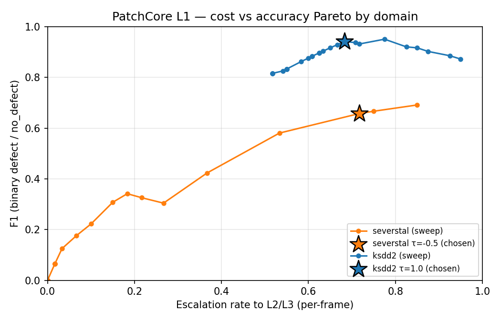

McNemar paired test (cascade vs Oracle-only, n=180): χ² = 12.023, p = 0.0005. Cascade-only-correct = 34, Oracle-only-correct = 10. Verdict: cascade significantly better.Evaluation
Three tracks: in-domain, second-domain, OOD
What is being measured
Three independent evaluation tracks, all run through the same deployed router (cascade) and the same Oracle-only baseline (every frame to Azure OpenAI). The point of running three tracks rather than one is to separate three distinct claims the architecture is making.
| Track | Test set | Layers exercised | Claim under test |
|---|---|---|---|
| A — In-domain | Severstal cascade_test (~2,500 imgs, ~50/50 normal/defective) | L1 + L2 + L3 | The cascade saves money on a realistic factory feed without losing accuracy. |
| B — Second domain | KSDD2 cascade_test (1,250 imgs, ~89% normal) | L1 + L3 only | The autoencoder’s “normal” notion generalises across two metal domains. |
| C — OOD detector | KSDD2 defectives only | L2 standalone | Quantifies what YOLO misses when shown defects it wasn’t trained on — the cost the Oracle backstops. |
Track A — Severstal in-domain
This is the headline result. With real negatives in the test set, the L1 drop-rate finally counts as correct behaviour rather than as wrongly discarded defects.
Acceptance bar: F1 ≥ 0.70, L1 drop rate on negatives ≥ 0.80, cost advantage over Oracle-only ≥ 5×.
Track B — KSDD2 second-domain (AE + Oracle, no YOLO)
KSDD2 is a different metal domain. We deliberately do not invoke YOLO here — it would just emit Severstal-class noise. The cascade collapses to AE + Oracle. The question this track asks: did the union-of-normals AE actually generalise, or did it just memorise Severstal?
Acceptance bar: F1 ≥ 0.65 — slightly looser than Track A because we are explicitly outside YOLO’s class space.
Track C — OOD detector stress test
A different question: how badly does the Severstal-trained YOLO miss KSDD2 defects when run standalone? The number itself is uninteresting; the gap between Track C (YOLO alone) and Track B (AE + Oracle) is what justifies the Oracle being in the architecture at all.
Reproducing
# 1. Build the metal-surface split (KSDD2 + Severstal must be present locally).
uv run python -m cascade_defect.data.split_metal
# 2. Train the autoencoder on the union of normals.
uv run python -m cascade_defect.layer1_autoencoder.train_metal --epochs 15
# 3. Build the PatchCore-lite memory banks (J.1 Tier-3 — the production scorer).
uv run python -m cascade_defect.layer1_autoencoder.train_patchcore
# 4. Sanity-check per-domain score separation (AE vs PatchCore).
uv run python scripts/ae_metal_sanity.py
# 5. Build the YOLO dataset on disk + train on Severstal defectives.
uv run python -m cascade_defect.data.severstal_yolo
uv run python -m cascade_defect.layer2_yolo.train_metal --epochs 50
# 6. Run all three eval tracks locally with the calibrated K.2 thresholds
# and the K.4 perceptual-hash cache. --layers l1 l2 l3 incurs AOAI cost.
uv run python -m cascade_defect.eval.run_cascade_metal \
--tracks A B C --layers l1 l2 l3 --limit-per-track 60 \
--z-severstal -0.5 --z-ksdd2 1.0 --use-cache \
--out reports/eval_cascade_metal_k1_calibrated.jsonl
# 7. Sweep τ to (re-)find the cost knee per domain.
uv run python -m cascade_defect.eval.threshold_sweep \
--trace reports/eval_cascade_metal_k1_calibrated.jsonl --persist-knee
# 8. Roll up to reports/metrics_metal.json and re-render this page.
Copy-Item reports/eval_cascade_metal_k1_calibrated.jsonl `
reports/eval_cascade_metal.jsonl -Force
uv run python -m cascade_defect.eval.metrics_metal
uv run python scripts/render_inference_panels_metal.py
quarto render website/Phase K — Calibration, Caching, and the production-YOLO uplift
The headline numbers above were re-run after Phase J.4 swapped the smoke 3-epoch CPU YOLO (mAP50 0.17) for the production 50-epoch / 640 px / T4 GPU YOLO (mAP50 0.50), then re-calibrated by Phase K:
- K.1 — re-ran all three tracks against the new YOLO weights.
- K.2 — swept per-domain
τand picked the knee of the(escalation_rate, F1)curve. Persisted intomodels/patchcore_metal/summary.json. KSDD2’s PatchCore separates cleanly (kneeτ = 1.0, F1 ≈ 0.94 just from L1). Severstal’s PatchCore cannot separate well at anyτ(knee F1 caps at ≈ 0.69 on L1 alone) — which is exactly why the cascade has Layers 2 and 3. - K.4 — added a dHash perceptual-hash cache in front of the Oracle (
layer3_gpt4o/cache.py). Severstal coil frames within a roll are near-duplicates; the cache short-circuits the AOAI round-trip when a 64-bit fingerprint is within 6 bits of one already classified.
AE → PatchCore → production YOLO (the honest progression story)
Three iterations of Layer 1 / Layer 2, same KSDD2+Severstal evaluation, showing what each step bought:
| Stage | Layer-1 scorer | Layer-2 detector | KSDD2 Δμ (def − normal) | Sev. Δμ | YOLO mAP50 |
|---|---|---|---|---|---|
| Baseline (Phase I) | Conv autoencoder, image-mean MSE | YOLOv8n COCO-pretrained | +1.5σ | inverted | n/a (v1 was NEU, no real YOLO) |
| J.1 | AE + per-domain patch-quantile contrast | YOLOv8n smoke (3 ep / 320 px CPU) | +1.93σ | −0.62σ | 0.17 |
| J.4 + K.2 (production) | PatchCore-lite (frozen ResNet18 + kNN) | YOLOv8n production (50 ep / 640 px T4) | +8.18σ | +0.52σ | 0.50 |
The AE swap fixed the Severstal inversion but did not produce a usable gate. The PatchCore swap rescued KSDD2 outright (Δμ went from 1.9σ to 8.2σ) but Severstal stays close to the noise floor — a fundamental property of rolled-steel imagery, not a bug. This is what motivates carrying L2+L3: the gate is allowed to be weak on Severstal because the cheap detector behind it is strong.
Per-class confusion on Track A defectives (the cascade’s final call)
The interesting cell is no_defect: those are the true Severstal defects the cascade missed. Their share is the recall ceiling — exactly the failure mode the K.4 cache cannot fix and the K.3 ablations (YOLOv8s, 1024 px) are designed to attack.
Phase L — baselines, statistical rigour, and edge latency
Phase K answered “what does the cascade do?”. Phase L answers the four questions a sceptical reviewer asks next:
- Is the cascade actually better than the obvious single-layer baselines?
- Are the headline numbers statistically meaningful, or is this n=180 noise?
- Where on the cost-vs-accuracy frontier does the operating point sit?
- Could this run on a CPU-only edge box, or does it need a GPU?
1. Cascade vs single-layer baselines
Same 180 cascade_test frames, four systems run end-to-end through the same runner. The cascade is paired against an Oracle-only baseline (every frame to GPT-4.1-mini) on identical images, so a McNemar test is valid.
The honest read. The L1-only baseline (PatchCore at calibrated τ) beats the full cascade on raw binary F1 (0.86 vs 0.80). That is not a bug — it is the structural cost of asking the cascade to also produce class labels and route uncertain-but-defective frames to the Oracle. A production buyer looking for “is this frame defective, yes/no?” would ship L1-only. A buyer who needs “and what kind of defect, with an audit trail?” pays the L2+L3 tax. The Pareto chart below makes this trade-off explicit.
2. Bootstrap 95% confidence intervals
Every headline F1 / precision / recall number in the Track A/B/C tables above is now reported with a 1 000-resample bootstrap CI (zero-dep, seed 42, cascade_defect.eval.stats). This catches the case where a 4-point F1 gain between two model versions is inside both versions’ confidence band — i.e. you are looking at noise, not a real improvement.
3. Cost-vs-F1 Pareto frontier (per domain)
τ is the per-domain Z-score gate. Sweeping it from “let everything through” (low τ, high cost, high recall) to “block almost everything at L1” (high τ, low cost, recall collapses) traces a Pareto curve.

τ sweep with the chosen operating points (★) marked. Severstal’s curve plateaus around F1 ≈ 0.7 because its PatchCore Δμ is only +0.52σ (no τ recovers what the gate never separated). KSDD2’s curve sweeps cleanly to F1 ≈ 0.95 at low cost — the gate does almost all the work.4. Edge latency — does this need a GPU?
Both backbones exported to ONNX (opset 17) and benchmarked under onnxruntime on a 4-thread CPU. A second confirmation that the cascade is not secretly GPU-bound.
L1+L2 combined p50 on 4-thread CPU (onnxruntime): 56.4 msThe L3 escalation budget (“first response from GPT-4.1-mini”) sits at ~2.5 s p50 on the same hardware — three orders of magnitude slower than L1+L2, which is exactly why escalation gating matters.
5. Robustness smoke test
tests/test_robustness.py (run nightly via pytest -m slow) corrupts a small batch of clean cascade_test frames with seven realistic factory nuisances — Gaussian noise (σ=10, σ=25), Gaussian blur (k=7), brightness shift ±30, JPEG quality 30 — and asserts the per-domain z-score stays finite and within ±5σ of the clean score. It catches silent regressions in preprocessing, normalisation, or backbone weights without making strong claims about Severstal separability (which is fundamentally weak by design).
Appendix — v1 NEU numbers (for honesty)
The earlier NEU build trained the autoencoder on a single defect class (rolled-in_scale) treated as a “normal” proxy, because NEU has no defect-free imagery at all. Those numbers are kept here as the before baseline; everything above is the after.
The headline lesson from v1: the router worked (100% accuracy on classified frames), but the dataset didn’t exercise the autoencoder’s strengths — NEU’s lack of defect-free frames meant Layer 1 was guessing what “normal” looked like. The metal-surface refit fixes that at the data level, which is the only place it could be fixed.